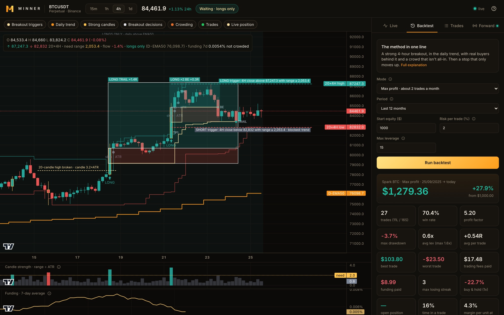
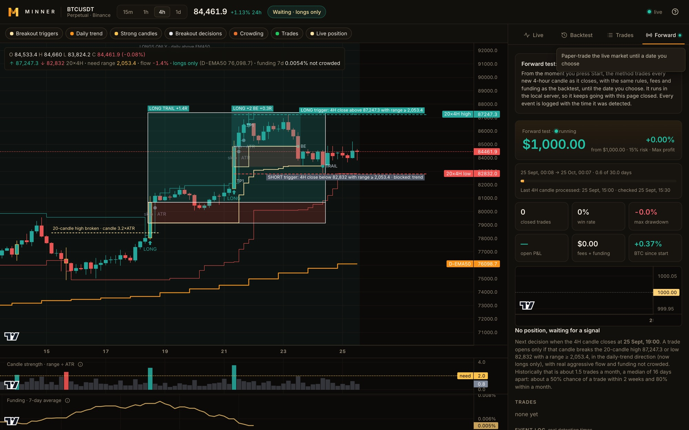

A live trading dashboard for BTC perpetual futures, built on a method we developed ourselves - one that doesn't exist anywhere else. Watch it read the market, replay it on six years of history, and paper-trade it forward on the live market.
Minner is a system built around a proprietary trading method developed by the two of us. The method is our own work from the ground up - it isn't a published strategy, an indicator pack or a variation on something you can find elsewhere, and it runs only here.
Around it we built the product that makes a method trustworthy: a live view of what it's watching right now, a backtest that replays it on the market since 2020 with every real cost deducted, and a forward test that paper-trades it on the live market from the moment you press start.
The chart shows what the method sees and the side panel says it in words: what it needs before the next trade, how far away that is, and what it did with every recent opportunity - including why it passed on the ones it skipped. Each layer on the chart can be switched on or off.
The backtest replays the method with the risk you choose and deducts Binance fees, slippage and real historical funding from every trade. The forward test runs the same rules on the live market in the local server, so it keeps going with the page closed, and logs every event with the time it was detected.

